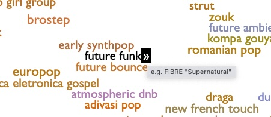
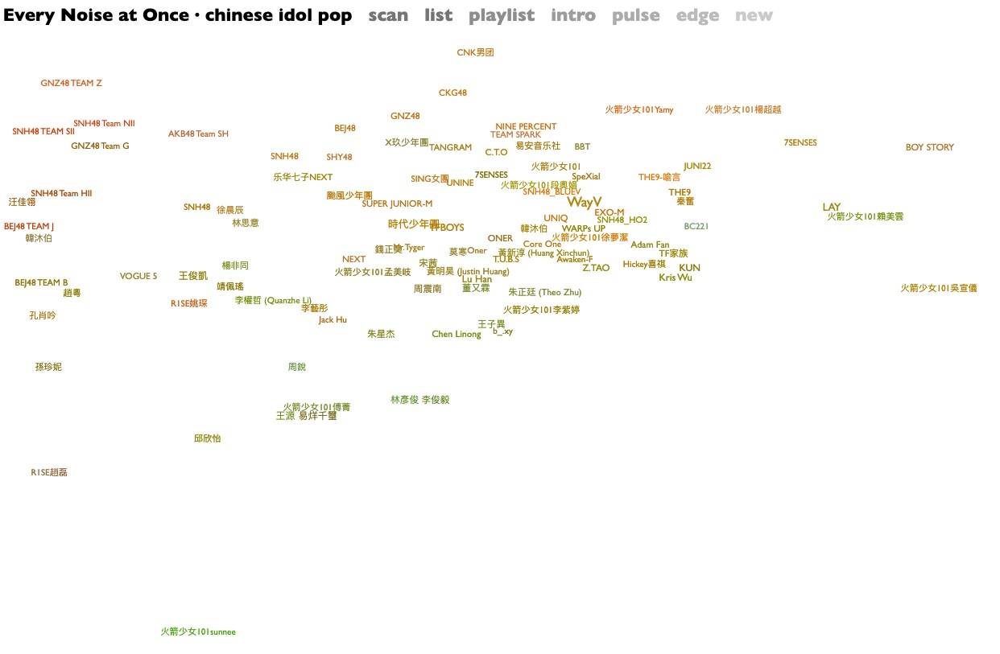
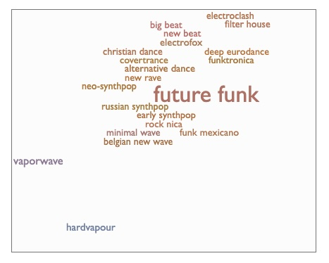
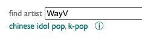
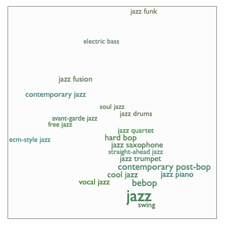

Guide to Navigating EveryNoise.com
What is Every Noise at Once?
Every Noise at Once (everynoise.com) is a website that helps you explore different types of music. It shows more than 6,000 music genres in an interactive map.
Important Note: Following recent layoffs at Spotify, the site is no longer being updated with new data.
Step 1: Understanding the Main Map
Start at the main page: https://www.everynoise.com/engenremap.html
The main page shows a large map with many music genres. This map is organized in a special way:
- Up and Down (Vertical Axis):
- Genres at the top sound more mechanical and electronic
- Genres at the bottom sound more organic and acoustic
- Left and Right (Horizontal Axis):
- Genres on the left are denser and more atmospheric
- Genres on the right are spikier and bouncier
Step 2: Listening to Music Genres
You can listen to examples of each genre:
- Click on a genre name - This plays a short sample of music in that genre
- Click on the arrow ► next to a genre - This takes you to a map of artists in that genre

Step 3: Exploring Artists in a Genre
After clicking the arrow ► next to a genre, you'll see a new map with artists in that genre.
On this page:
- Click on an artist name to hear their music
- Click on the arrow ► next to an artist to see more information about them

Step 4: Finding Related Genres
When looking at any genre page, scroll down to find the "Related Genres" box. This shows genres that are similar to the one you're looking at.
- Click on any related genre to hear an example
- Click on the arrow ► next to a related genre to go to that genre's page

Step 5: Searching for Specific Artists
If you want to find a specific artist:
- Go to the main page: https://www.everynoise.com/engenremap.html
- Look for the "find artist" search box in the top right corner
- Type the artist's name and press Enter
- If the artist is in the database, you'll see:
- Genre categories related to the artist
- An information (i) icon

Step 6: Going Directly to a Genre
If you know the name of a genre, you can go directly to its page by typing in your browser:
https://www.everynoise.com/engenremap-GENRENAME.html
Just replace GENRENAME with the name of the genre (without spaces). For example:
Tip: Understanding Big Categories
You can use Every Noise to understand how big musical categories like "Jazz" or "Rock" are divided into smaller genres.
For example, visit https://www.everynoise.com/engenremap-jazz.html to see all the different types of jazz music.

Major Music Genres to Explore
Here are 20 major music genres you can start exploring:
Pop Music
Hip-Hop/Rap
Rock Music
Electronic Dance Music (EDM)
Country Music
Latin Music
Rhythm and Blues (R&B/Soul)
Jazz
Classical Music
K-Pop
Metal
Reggae
Punk
Funk
Gospel
Folk
Blues
Soul
Indie/Alternative
Afrobeats
How to Use This for Film Studies
As film students, you can use Every Noise to:
- Find music that matches the mood of your scenes
- Discover authentic music from specific cultures or time periods
- Learn about music genres that might be mentioned in films
- Understand how different styles of music create different emotions